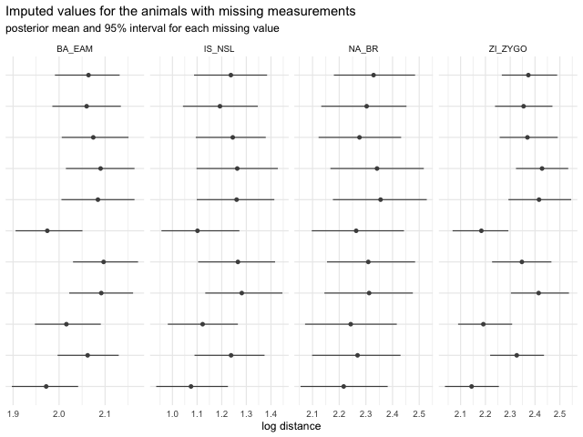

Traits are rarely measured on everyone. Dropping the individuals with
a gap throws away the traits that were measured on them, and
with relatedness it is unnecessary: a missing value is informed by every
relative’s observed traits. The opossum data ship that way (11 of the
animals with a recorded sex and age have none of these four traits
measured), so the model is fitted with the gaps in place and
imputed_data() fills them from the relatives’ records.
Data, with the gaps already in it
Four distances spanning the skull from the nasal suture to the basicranium, positively correlated with each other (0.39 to 0.78). That correlation is what lets a gap borrow from the other traits of the same animal, on top of what its relatives say.
traits <- c("IS_NSL", "NA_BR", "ZI_ZYGO", "BA_EAM")
dat <- opossum
dat[traits] <- log(dat[traits]) # morphometrics are fitted on the log scaleanimal_design() drops the rows with a missing predictor
(age), but keeps the rows whose response has gaps.
design <- suppressWarnings(
animal_design(cbind(IS_NSL, NA_BR, ZI_ZYGO, BA_EAM) ~ sex + age, data = dat))
Y <- design$Y
A <- opossum_grm[rownames(Y), rownames(Y)]
c(missing_entries = sum(is.na(Y)), entries = length(Y),
incomplete_animals = sum(!complete.cases(Y)),
complete_animals = sum(complete.cases(Y)))
#> missing_entries entries incomplete_animals complete_animals
#> 44 2064 11 505Fit with the gaps in place
Nothing is dropped: the gaps become parameters of the model, with a
flat prior, so the posterior over G, E and
beta is the exact marginal over the observed data.
fit <- lmm_animal(Y, design$X, A, lkj_prior = 2,
iter = 800, warmup = 400, chains = 2,
refresh = 0, seed = 1)
#> Running MCMC with 2 parallel chains...
#> Chain 2 finished in 24.4 seconds.
#> Chain 1 finished in 28.8 seconds.
#>
#> Both chains finished successfully.
#> Mean chain execution time: 26.6 seconds.
#> Total execution time: 29.0 seconds.
fit$summary(c("h2", "corrG"))
#> # A tibble: 20 × 10
#> variable mean median sd mad q5 q95 rhat ess_bulk ess_tail
#> <chr> <dbl> <dbl> <dbl> <dbl> <dbl> <dbl> <dbl> <dbl> <dbl>
#> 1 h2[1] 0.0970 0.0914 0.0402 0.0374 0.0436 0.171 1.01 681. 408.
#> 2 h2[2] 0.173 0.169 0.0492 0.0479 0.101 0.258 1.00 580. 330.
#> 3 h2[3] 0.194 0.188 0.0527 0.0543 0.115 0.287 1.01 580. 458.
#> 4 h2[4] 0.217 0.215 0.0509 0.0493 0.139 0.307 1.01 725. 664.
#> 5 corrG[1… 1 1 0 0 1 1 NA NA NA
#> 6 corrG[2… -0.161 -0.172 0.219 0.233 -0.503 0.201 0.999 1254. 766.
#> 7 corrG[3… 0.309 0.324 0.199 0.204 -0.0304 0.617 1.00 594. 514.
#> 8 corrG[4… 0.496 0.507 0.182 0.181 0.164 0.774 1.00 737. 515.
#> 9 corrG[1… -0.161 -0.172 0.219 0.233 -0.503 0.201 0.999 1254. 766.
#> 10 corrG[2… 1 1 0 0 1 1 NA NA NA
#> 11 corrG[3… 0.0732 0.0708 0.194 0.195 -0.233 0.403 1.00 1156. 673.
#> 12 corrG[4… 0.0912 0.0909 0.180 0.185 -0.215 0.393 1.00 1148. 818.
#> 13 corrG[1… 0.309 0.324 0.199 0.204 -0.0304 0.617 1.00 594. 514.
#> 14 corrG[2… 0.0732 0.0708 0.194 0.195 -0.233 0.403 1.00 1156. 673.
#> 15 corrG[3… 1 1 0 0 1 1 NA NA NA
#> 16 corrG[4… 0.435 0.450 0.159 0.163 0.163 0.685 1.00 829. 569.
#> 17 corrG[1… 0.496 0.507 0.182 0.181 0.164 0.774 1.00 737. 515.
#> 18 corrG[2… 0.0912 0.0909 0.180 0.185 -0.215 0.393 1.00 1148. 818.
#> 19 corrG[3… 0.435 0.450 0.159 0.163 0.163 0.685 1.00 829. 569.
#> 20 corrG[4… 1 1 0 0 1 1 NA NA NAThe completed data
imputed_data() returns individuals by traits by draws,
with the gaps filled on the response scale. These are multiple
imputations: do not collapse them to one filled-in matrix and treat it
as data.
imp <- imputed_data(fit, ndraws = 500, seed = 2)
imp
#> <stanimal_imputation> 500 completed datasets of 516 individuals and 4 trait(s), 44 imputed value(s)
#> individual trait mean q2.5 q97.5
#> K1813 IS_NSL 1.237 1.088 1.384
#> K1813 NA_BR 2.329 2.180 2.485
#> K1813 ZI_ZYGO 2.373 2.266 2.489
#> K1813 BA_EAM 2.064 1.991 2.132
#> K2355 IS_NSL 1.193 1.043 1.347
#> K2355 NA_BR 2.303 2.133 2.452
#> K2355 ZI_ZYGO 2.354 2.239 2.470
#> K2355 BA_EAM 2.060 1.985 2.134
#> K7802 IS_NSL 1.245 1.095 1.379
#> K7802 NA_BR 2.276 2.123 2.432
#> K7802 ZI_ZYGO 2.369 2.258 2.491
#> K7802 BA_EAM 2.074 2.006 2.151
#> L1497 IS_NSL 1.263 1.098 1.428
#> L1497 NA_BR 2.342 2.167 2.517
#> L1497 ZI_ZYGO 2.428 2.323 2.534
#> L1497 BA_EAM 2.090 2.015 2.164
#> L2196 IS_NSL 1.260 1.099 1.414
#> L2196 NA_BR 2.355 2.176 2.528
#> L2196 ZI_ZYGO 2.416 2.293 2.546
#> L2196 BA_EAM 2.084 2.005 2.164
#> L2820 IS_NSL 1.102 0.955 1.272
#> L2820 NA_BR 2.264 2.097 2.443
#> L2820 ZI_ZYGO 2.184 2.068 2.293
#> L2820 BA_EAM 1.974 1.905 2.051
#> L4268 IS_NSL 1.266 1.104 1.417
#> L4268 NA_BR 2.309 2.154 2.485
#> L4268 ZI_ZYGO 2.347 2.227 2.466
#> L4268 BA_EAM 2.097 2.030 2.172
#> L6009 IS_NSL 1.281 1.133 1.447
#> L6009 NA_BR 2.312 2.144 2.476
#> L6009 ZI_ZYGO 2.415 2.303 2.537
#> L6009 BA_EAM 2.092 2.022 2.161
#> L7483 IS_NSL 1.123 0.981 1.266
#> L7483 NA_BR 2.243 2.072 2.416
#> L7483 ZI_ZYGO 2.192 2.090 2.308
#> L7483 BA_EAM 2.016 1.947 2.091
#> L7492 IS_NSL 1.238 1.089 1.374
#> L7492 NA_BR 2.269 2.098 2.430
#> L7492 ZI_ZYGO 2.326 2.219 2.436
#> L7492 BA_EAM 2.062 1.997 2.130
#> L7600 IS_NSL 1.075 0.934 1.225
#> L7600 NA_BR 2.217 2.055 2.382
#> L7600 ZI_ZYGO 2.144 2.037 2.254
#> L7600 BA_EAM 1.972 1.897 2.041
dim(imp$Y)
#> [1] 516 4 500What the model believes about each gap:
gaps <- imp$gaps
intervals <- t(vapply(seq_len(nrow(gaps)), function(i) {
v <- imp$Y[gaps$individual[i], gaps$trait[i], ]
c(mean = mean(v), lo = unname(quantile(v, 0.025)),
hi = unname(quantile(v, 0.975)))
}, c(mean = 0, lo = 0, hi = 0)))
plot_dat <- data.frame(
gap = sprintf("%s / %s", gaps$individual_label, gaps$trait_label),
trait = gaps$trait_label,
mean = intervals[, "mean"], lo = intervals[, "lo"], hi = intervals[, "hi"])
plot_dat$gap <- factor(plot_dat$gap,
levels = rev(plot_dat$gap[order(plot_dat$trait)]))
ggplot(plot_dat, aes(x = mean, y = gap)) +
geom_pointrange(aes(xmin = lo, xmax = hi), colour = "grey30", size = 0.2) +
facet_wrap(~trait, scales = "free", nrow = 1) +
labs(x = "log distance", y = NULL,
title = "Imputed values for the animals with missing measurements",
subtitle = "posterior mean and 95% interval for each missing value") +
theme_minimal() +
theme(axis.text.y = element_blank())
plot of chunk plot